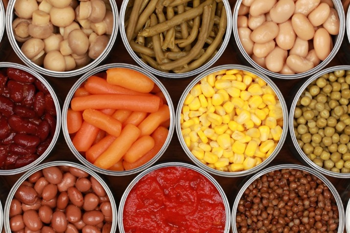
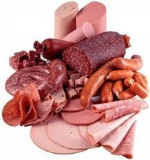
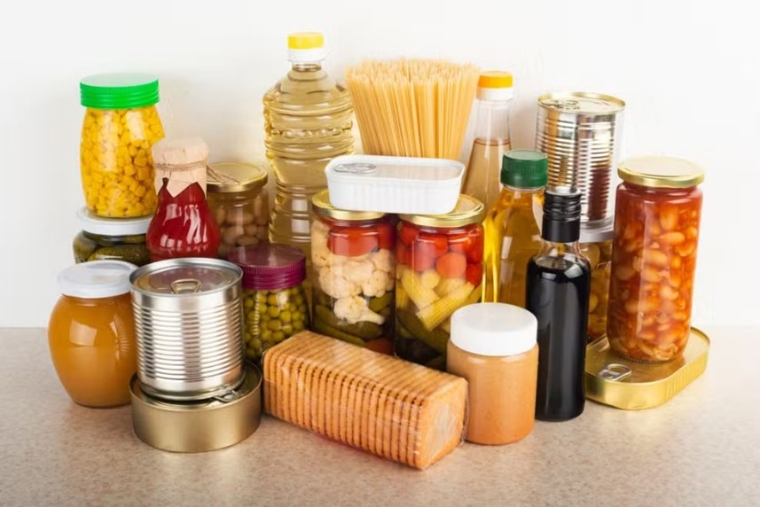

Conhecendo os alimentos: Do natural aos industrializados
Alimentos processados são produtos in natura modificados pela indústria, visando aumentar a durabilidade ou sabor. A modificação da indústria nos processados pode ser: adição de sal, açúcar, óleo ou outras substâncias.
Exemplos de processados são: Milho em conserva, Atum em lata, Queijo prato, Fruta em calda e Pão francês
A diferença e que os in natura são sem nem uma modificação já os processados tem a adição de algumas coisas já citadas


